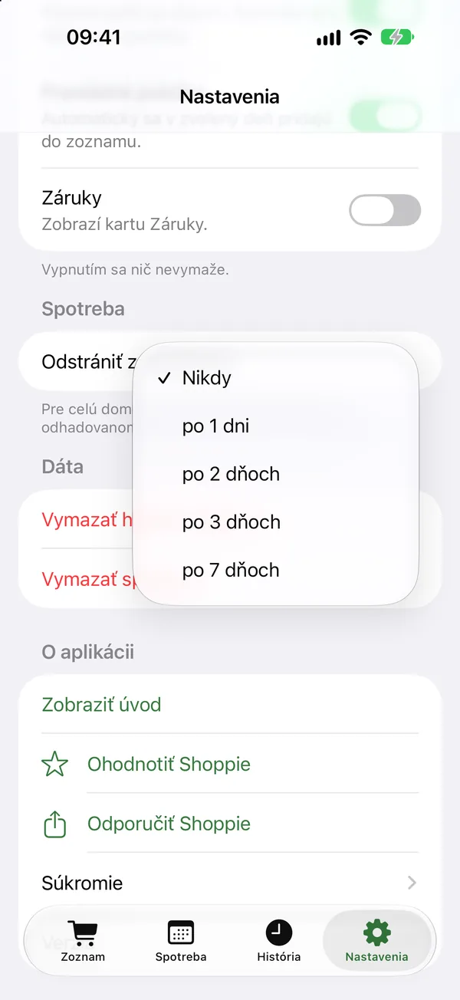
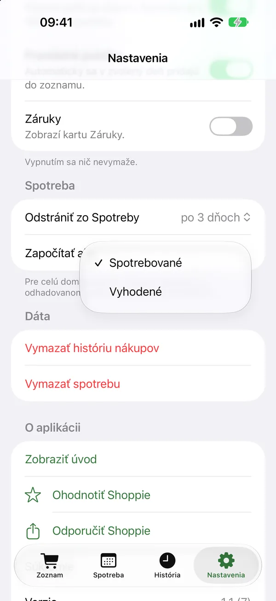

Ako zapnúť automatické odstránenie potravín po dátume
-
Krok 1 Otvorte Odstrániť zo Spotreby
V karte Nastavenia v sekcii Spotreba ťuknite na Odstrániť zo Spotreby a namiesto Nikdy vyberte, po koľkých dňoch (po 1, 2, 3 alebo 7 dňoch).

-
Krok 2 Vyberte, ako sa započíta
V riadku Započítať ako zvoľte Spotrebované alebo Vyhodené. Riadok sa ukáže, až keď vyberiete počet dní.

Časté otázky
Platí nastavenie aj pre rodinu?
Áno. Automatické odstránenie platí pre celú domácnosť. Funguje aj pri odhadovaných dátumoch.
Ďalšie otázky nájdete na stránke Podpora.